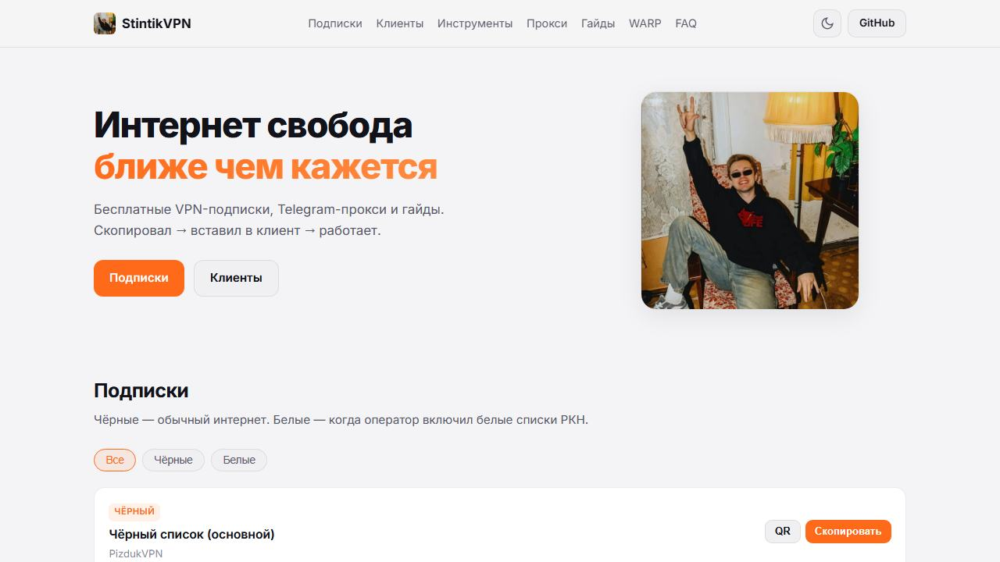
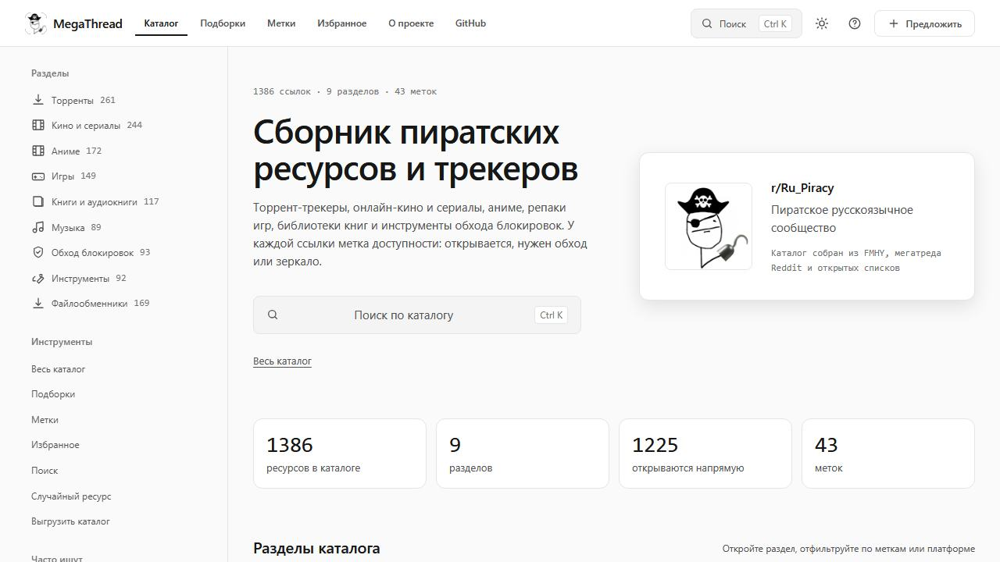
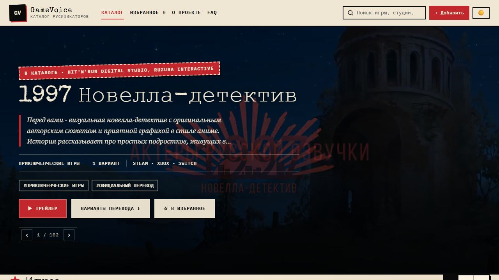
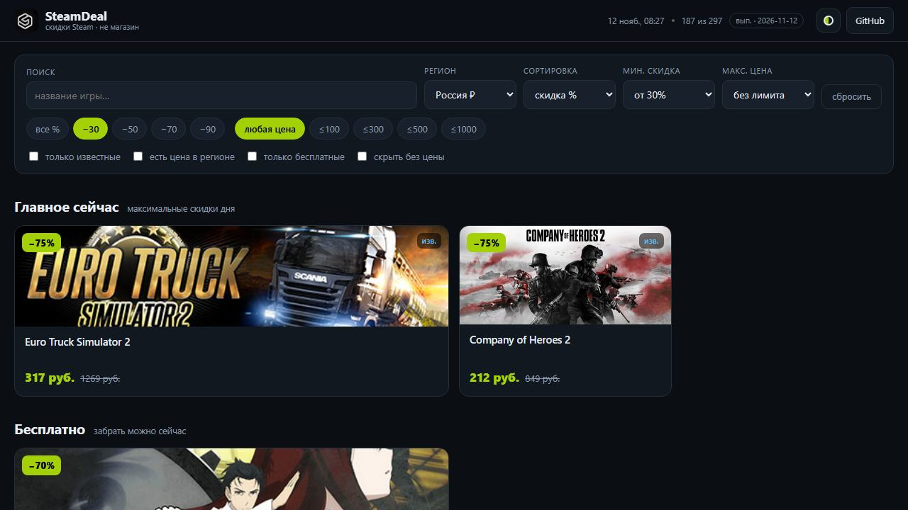
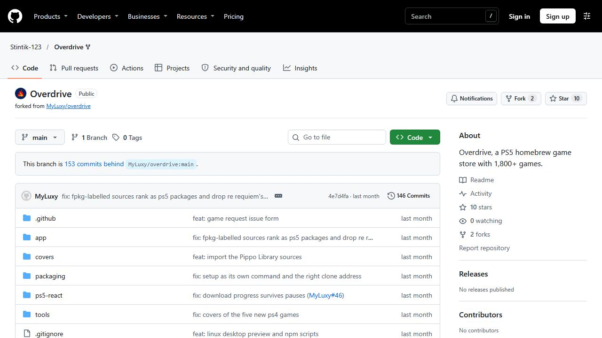

StintikVPN 01
Бесплатные VPN-подписки, Telegram-прокси и гайды. Скопировал — вставил в клиент — работает.
Соло-разработчик из Ульяновска. Бесплатные инструменты с открытым кодом — без рекламы, аккаунтов и рассылок.
Меня знают по-разному: в Reddit я модератор и автор новостей, в Steam — stint, в Telegram — @Keb04w, на GitHub — Stintik-123. Это всё один и тот же человек из Ульяновска. Ниже — полная карта, чтобы не пришлось гадать.
Пять проектов, которые работают прямо сейчас. Без регистрации, без условий.

Бесплатные VPN-подписки, Telegram-прокси и гайды. Скопировал — вставил в клиент — работает.

Каталог ресурсов и трекеров: кино, аниме, игры, книги. Работает офлайн как PWA.

Русификаторы и озвучки игр. Кто делал, что переведено, статус работы и прямые ссылки — всё в одной карточке.

Витрина скидок Steam с ценами в регионах RU, KZ, UA и US. Фильтры по проценту, цене и наличию.

Магазин homebrew для PS5. Нативное приложение на C++ с поддержкой сети и обновлений.
Я начинал с модов и каналов по Minecraft, и оттуда осталась привычка: если что-то нужно людям — надо просто сделать и выложить.
Меня зовут Стинт. Я соло-разработчик и делаю бесплатные инструменты для доступа к информации: VPN-подписки, каталоги, озвучки игр, десктопные утилиты.
В интернете с 2020 года: сначала моды и каналы по Minecraft, потом каталоги, боты и нативные приложения. Сейчас у меня 12 открытых репозиториев, зеркала на GitLab и работа в r/Ru_Piracy — правлю правила и помогаю людям инструментами.
Проекты живут по вечерам и в выходные — это единственное время, которое я могу удерживать в руках что-то большое. Профессию я не выбрал и не тороплюсь: код для меня — хобби, а не работа, и от этого он делается честнее.
Кодинг для меня хобби, а не работа. Мне интересен не процесс, как пишется код, а готовый продукт: собрал, показал людям, дальше он живёт сам.
Раньше это были каналы по Minecraft — 200 подписчиков на канале модов и 451 на канале с видео; в 10–12 лет на них зарабатывал. Сейчас каналы заброшены, но остался рефлекс: если что-то нужно людям — сделать и выложить.
Код в основном печатает ИИ — я решаю, что делать, зачем и как это должно работать. Отсюда скорость: недели разработки превращаются в дни. Но продукт, смысл и ответственность всё равно мои.
Вне работы — сюжетные игры, интерактивное кино и железо.
6 ядер, графика встроенная
Встройка в процессор — дискретной карты нет
Хватает на сборку каталогов и сборку из репозиториев
Система, репозитории и собранные базы ссылок
19 дюймов — давно, но ещё работает
Играю на клавиатуре, за контроллером 8BitDo Ultimate 2C
Телефон — Tecno Spark Go 1. VPN не держу круглосуточно: батарея не тянет. Железо планирую обновлять — под Black Myth встроенной графики не хватит, а на Vega 7 тяжёлые игры идут как мыло.
Обожаю лор, цитаты и новости комьюнити — споры по играм разбираю на Reddit. Покупаю только на распродажах и в казахстанском регионе Steam, цены считаю в тенге. Фильмы и сериалы — список допишу.